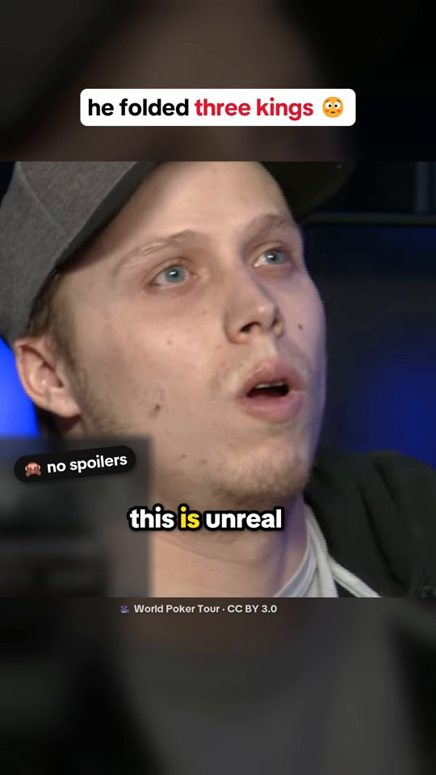
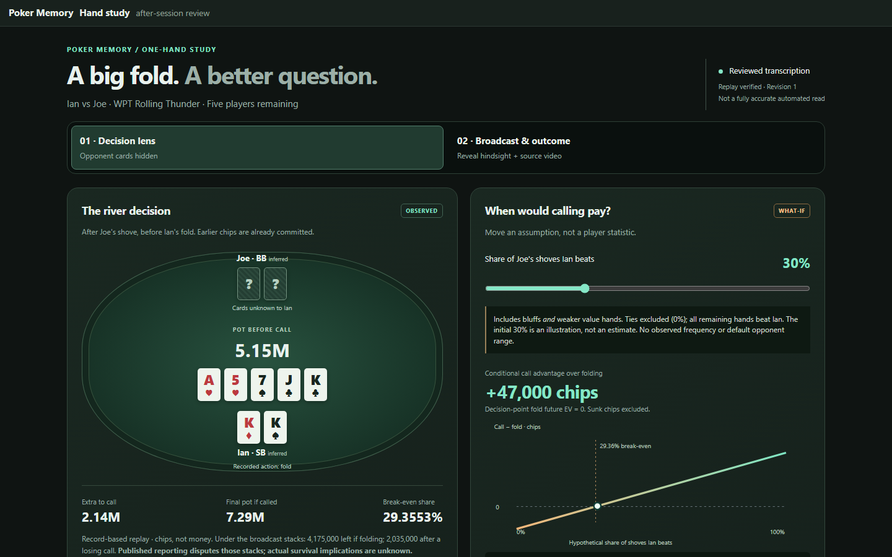
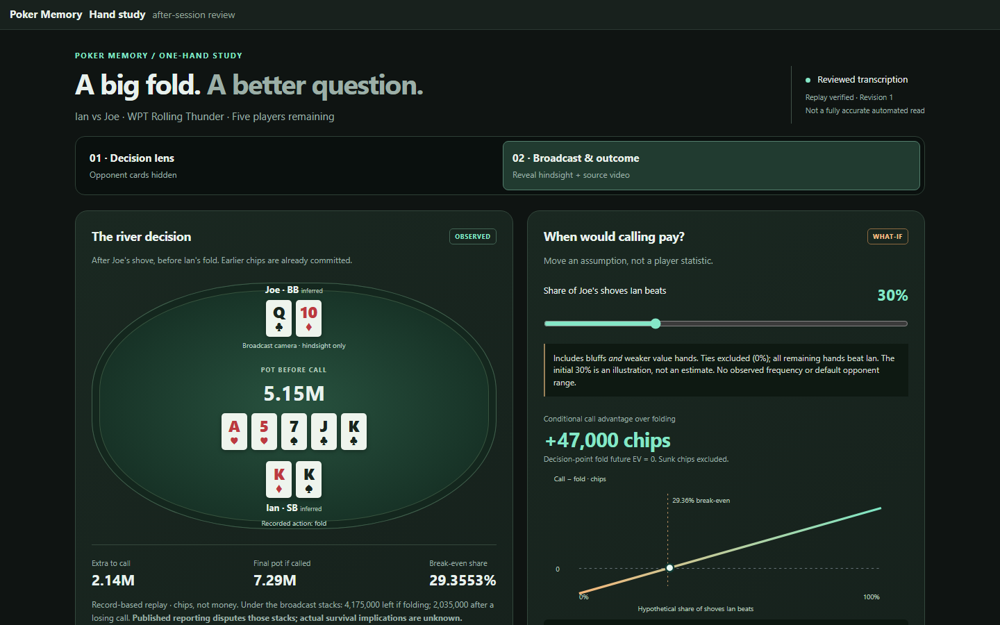
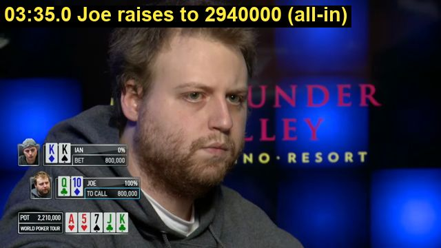
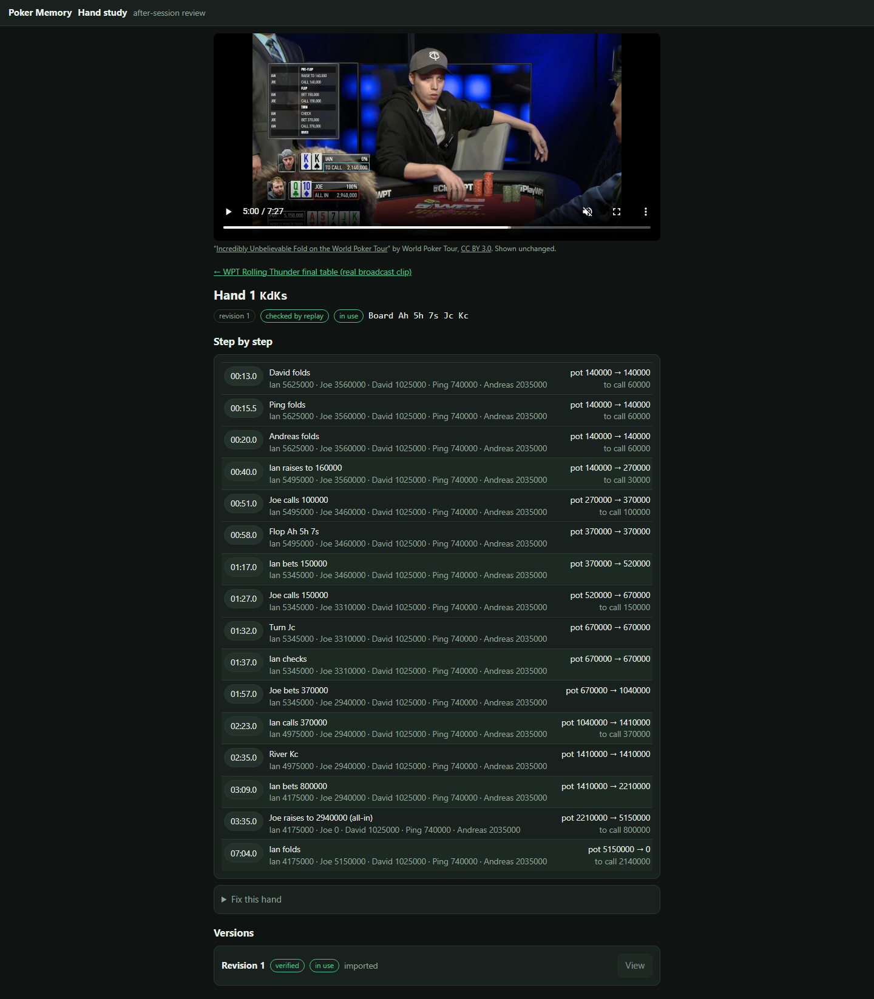

Poker Memory: results
What it has done on real footage so far, with the numbers kept honest. Source code and README
Open a result

The TikTok: "he folded three kings"
78.7 s · all checks pass
A vertical short built only from code: cuts, captions, card graphics, made-from-scratch sound effects. Hole cards stay hidden until the reveal.


Hand study: "A big fold. A better question."
29.36% break-even
The web page that reviews one decision. You move one assumption and see when calling would have paid. A reviewed hand record, not an automatic read.

Fast reader: the hand from the TV graphics
26 of 27 right · about 1 s
Reads cards, seats, amounts and actions from the broadcast overlay. One fold was timed 3.1 s late. About 1 s with the reader already running, 2.3 s from a fresh start.

River solver: call or fold?
call ≈ +4.3M chips vs fold
An estimate for two-player rivers under assumed hand ranges. It is not a fact about Joe and ignores tournament payouts.

First real tournament hand
16 moments, replay legal
The first run on real footage. The hand was typed in by eye; the app replayed it, did the pot-odds math and jumped the video to each moment.


Hand page with video
every action, time-stamped
Each step shows the stacks and the pot. Click a time to jump the video there.
Where it stands
| Part | Status | Plain words |
|---|---|---|
| Replay checker | works | Every hand is replayed by the rules. Illegal hands are refused. |
| Hand study page | works | One reviewed hand, with decision and hindsight views. |
| Fast reader, WPT layout | close | 26 of 27 checks. One late fold. |
| Reader, other TV layouts | in progress | Development reads only. Not scored. |
| River solver | estimate | Two-player rivers only. Ranges are assumptions. |
| 100-hand accuracy test | 0 of 100 | The checker is built. No hands are certified yet, because each one needs footage that is cleared for reuse and an independent answer key. |
Video stills and commentary: "Incredibly Unbelievable Fold on the World Poker Tour" by World Poker Tour, CC BY 3.0. Stills are resized and labeled; the TikTok is cut and remixed.